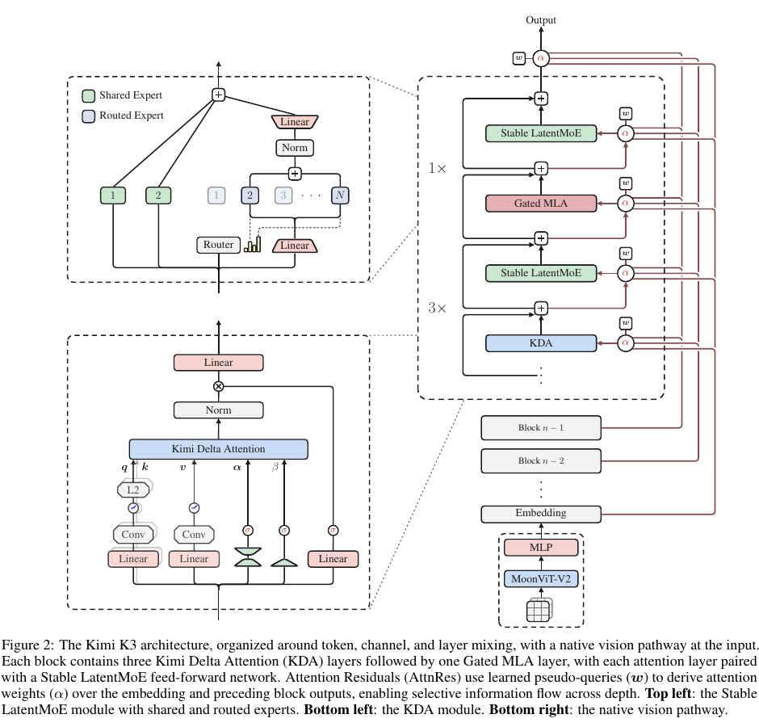
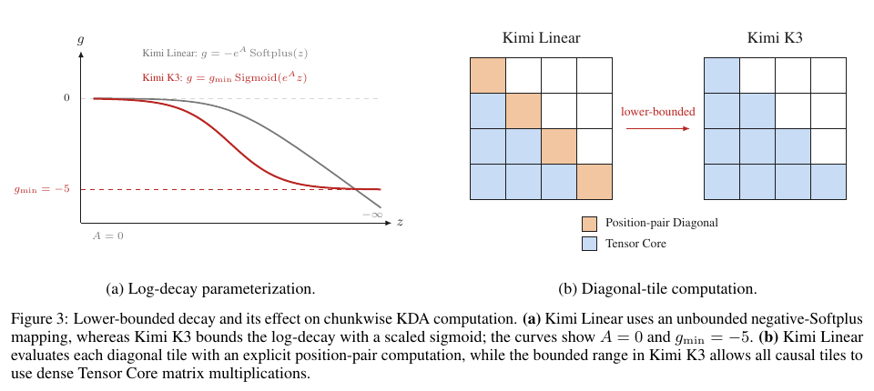
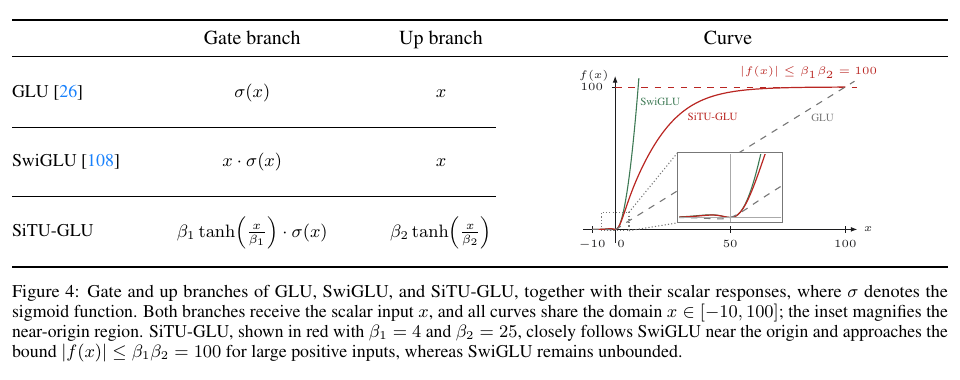
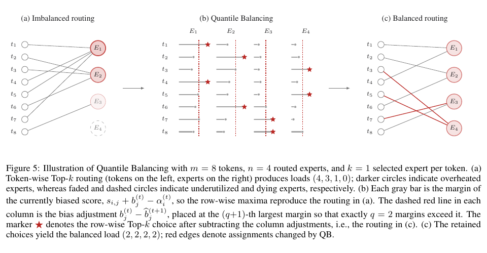
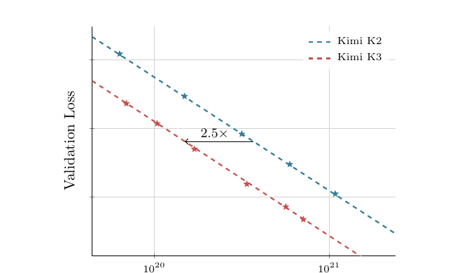
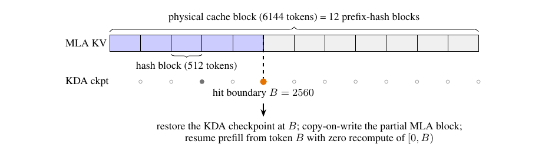

主文档：官方技术报告
官方模型：Hugging Face - moonshotai/Kimi-K3
官方配置：config.json
报告版本：2026-07-28，47 页
0. 执行摘要
Kimi K3 的核心并不是单纯把 Kimi K2 从 1T 扩大到 2.8T，而是同时重做了三条信息流：
- 沿序列的信息流：用 69 层 Kimi Delta Attention（KDA）承担低成本、固定状态的长序列混合，每 3 层 KDA 插入 1 层全局 Gated MLA，共 24 层 MLA，兼顾线性复杂度和全局精确交互。
- 沿深度的信息流：用 Block Attention Residuals（Block AttnRes）取代“所有历史层输出一律等权相加”的普通残差，让当前层可以按输入内容选择此前哪个深度的表示。
- 沿通道/专家的信息流：用 Stable LatentMoE 把 routed expert 放在 3584 维 latent 空间中，扩到 896 个 routed experts、每 token 激活 16 个，同时用 RMSNorm、SiTU-GLU 和 Quantile Balancing 解决极稀疏 MoE 的激活爆炸和负载不均衡。
再加上从零开始、与语言模型共同预训练的 MoonViT-V2，以及 Per-Head Muon，K3 得到：
- 总参数：2.78T
- 每 token 激活参数：104.2B
- 主干层数：93
- 上下文：1,048,576 tokens
- 原生文本、图像、视频输入
- 后训练阶段对 routed expert 权重采用 MXFP4 QAT，激活使用 MXFP8
论文声称这些架构、数据和训练 recipe 合计带来相对 Kimi K2 约 2.5 倍 scaling efficiency。该指标的含义如下：
2.5 倍是拟合 scaling-law 曲线后，在相同验证损失下所需训练 FLOPs 的横向差距，不是“推理快 2.5 倍”，也不是任意单个模块独立贡献 2.5 倍。
而且报告没有公开 K3 的预训练 token 总量、GPU 总数、总 GPU-hours、训练天数或逐项架构消融，所以无法把这 2.5 倍精确拆给 KDA、AttnRes、LatentMoE、数据和优化器中的某一个。
1. 论文的叙事主线
1.1 问题意识：同时扩展训练时计算和测试时计算
论文把当前大模型 scaling 分成两条轴：
- 训练前/预训练 scaling：扩大参数、数据和训练 FLOPs，代表路线来自经典 scaling laws 和 Chinchilla。
- 测试时 scaling：让模型花更多 reasoning tokens、工具调用和并行 agent 计算，代表路线包括 OpenAI o-series、DeepSeek-R1、Kimi K1.5 和 Kimi K2.5 Agent Swarm。
作者认为近期开放模型更多在第二条轴上竞争，但预训练底座仍集中在 1T 左右。因此 K3 的目标是两条轴同时扩大：
- 预训练底座扩大到 2.8T total / 104B active；
- 上下文扩大到 1M；
- RL 直接覆盖长时 coding、general agent、knowledge work 和视觉工具使用；
- 提供 low / high / max 三档 reasoning effort。
1.2 论文结构
论文随后依次回答五个问题：
- 模型架构
Hybrid KDA-MLA、AttnRes、Stable LatentMoE、MoonViT-V2、Per-Head Muon。 - 预训练方法
原生多模态 next-token prediction、重新拟合 scaling law、8K 到 1M 的渐进长上下文训练。 - 后训练方法
SFT 冷启动，三领域乘三档 effort 的九个 RL 专家，再用 MOPD 合并成一个模型。 - 训练与部署基础设施
FlashKDA/KCP、MoonEP、分层内存、Mooncake、AgentENV、混合 KDA/MLA prefix cache 和 fleet scheduler。 - 性能与效率评估
K3 在大量 coding、agentic 和 vision benchmark 上领先多数被测开放/闭源模型，但总体仍落后于报告中的 Claude Fable 5 和 GPT-5.6 Sol。
2. 架构总览
2.1 关键配置
| 项目 | Kimi K2 | Kimi K3 | 变化 |
|---|---|---|---|
| 总参数 | 1.04T | 2.78T | +167% |
| 激活参数 | 32.6B | 104.2B | +220% |
| 主干层数 | 61 | 93 | +52% |
| hidden size | 7168 | 7168 | 不变 |
| attention heads | 64 | 96 | +50% |
| attention | 61 MLA | 69 KDA + 24 Gated MLA | Hybrid |
| routed experts | 384 | 896 | +133% |
| 每 token routed top-k | 8 | 16 | +100% |
| shared experts | 1 | 2 | +100% |
| latent MoE width | 无 | 3584 | 主干宽度的一半 |
| 每 expert FFN hidden | 2048 | 3072 | +50% |
| 激活函数 | SwiGLU | SiTU-GLU | 有界化 |
| 训练上下文 | 128K | 1M | 8 倍 |
| ViT | 无 | 401M / 27 层 | 原生视觉 |
| vocabulary | 160K | 160K | 不变 |
| MTP | 1 层 | 训练时 1 层 | 后续改造成 draft |
官方发布配置还给出以下实现级参数：
hidden_size = 7168num_hidden_layers = 93num_attention_heads = 96- KDA
head_dim = 128 - KDA ShortConv kernel size = 4
gate_lower_bound = -5- MLA
q_lora_rank = 1536 - MLA
kv_lora_rank = 512 attn_res_block_size = 12num_experts = 896num_experts_per_token = 16num_shared_experts = 2routed_expert_hidden_size = 3584- SiTU 参数
beta_1 = 4、beta_2 = 25 max_position_embeddings = 1,048,576
2.2 一层到整网的数据流
除第一层 dense FFN 外，主干大体可以理解为：
AttnRes 从 embedding / 历史 block 表示中选择输入
↓
RMSNorm
↓
KDA 或 Gated MLA
↓
输出门控 + 线性映射
↓
AttnRes / 当前 block 累积
↓
RMSNorm
↓
Stable LatentMoE
├─ 2 个 shared experts：处理通用变换
└─ 896 个 routed experts 中选 16 个：处理专门变换
↓
回到残差/AttnRes 流
注意力层按以下顺序重复：
KDA -> KDA -> KDA -> Gated MLA
总共有 23 组这样的 4 层结构，即 69 KDA + 23 MLA；主干末尾再加 1 个 Gated MLA，保证最终一层一定能做全局 attention，因此合计 24 MLA、93 层。
2.3 三维信息流
flowchart LR
X["输入 token / visual token"] --> S["序列混合"]
X --> D["深度混合"]
X --> C["通道混合"]
S --> KDA["3 x KDA\n固定大小 recurrent state\n低成本长序列"]
S --> MLA["1 x Gated MLA\n全局 token-token attention"]
D --> AR["Block AttnRes\n选择 embedding 和历史 block"]
C --> MOE["Stable LatentMoE\n2 shared + Top-16/896 routed"]
KDA --> H["统一 backbone 表示"]
MLA --> H
AR --> H
MOE --> H

3. 技术谱系总图
本文把技术关系分成两类：
- 实线：K3 报告明确使用了
introduced by、follows、adopts、building on等表述，或组件名称和实现关系本身足以确认结构继承； - 虚线：K3 报告引用了相关工作，或两个机制在功能上明显相近，但公开材料不足以确认直接派生。
因此，虚线只表示“相关但非直接祖先”，不能读成“Moonshot 一定参考了该方法”。相似设计既可能来自文献影响，也可能是面对相同工程约束时的独立收敛。
flowchart LR
FWP["Delta rule / Fast Weight Programmers\nSchlag et al., 2021"] --> DN["DeltaNet"]
M2["Mamba-2 / SSD\nDao & Gu, 2024"] --> GDN["Gated DeltaNet\nICLR 2025"]
DN --> GDN
GDN --> KL["Kimi Linear / KDA\n2025"]
KL --> K3KDA["K3 KDA\nlower-bounded decay\nfull-rank output gate"]
MHA["Transformer MHA\n2017"] --> MLA0["MLA\nDeepSeek-V2, 2024"]
MLA0 --> K2MLA["Kimi K2 / K2.5 MLA"]
KL --> HMLA["Kimi Linear Hybrid KDA-MLA\nNoPE MLA"]
K2MLA --> HMLA
HMLA --> GMLA["K3 Gated MLA\nfull-rank channel gate"]
GA["Gated Attention\n2025"] -.-> K3KDA
GA -.-> GMLA
linkStyle 10,11 stroke-dasharray: 8 5,stroke-width:3px
flowchart LR
RES["ResNet residual\n2015"] --> PRE["Transformer PreNorm residual"]
PRE --> ATTNR["Attention Residuals\n2026"]
ATTNR --> BATTNR["Block AttnRes"]
BATTNR --> K3AR["K3: 12 layers/block\n8 layer-blocks + embedding"]
flowchart LR
GSMOE["GShard / standard Top-k MoE"] --> DSMOE["DeepSeekMoE\nfine-grained + shared experts"]
DSMOE --> LMOE["LatentMoE\n2026"]
LMOE --> SLMOE["Stable LatentMoE"]
DSV3["DeepSeek-V3\naux-loss-free bias routing"] --> QB["Quantile Balancing"]
QB --> SLMOE
QB0["Optimal assignment / BASE Layers / BIP\nSu 2026"] -.-> QB
GLU["GLU, 2017"] --> SWI["SwiGLU, 2020"]
SWI --> SITU["SiTU-GLU\nK3"]
SITU --> SLMOE
linkStyle 5 stroke-dasharray: 8 5,stroke-width:3px
flowchart LR
KV["Kimi-VL MoonViT\n2025"] --> K25["Kimi K2.5 MoonViT-3D\nSigLIP init"]
K25 --> MV2["MoonViT-V2\nfrom scratch NTP"]
MUON["Muon"] --> MOON["Moonlight: scalable Muon"]
MOON --> MCLIP["Kimi K2 MuonClip"]
MCLIP --> PHM["K3 Per-Head Muon"]
三条虚线的具体含义如下：
- Gated Attention -> K3 KDA / Gated MLA：K3 报告在两处 data-dependent output gate 的说明中都引用了 Gated Attention [100]，因此存在明确的文献关联；但报告没有说明 K3 的 full-rank channel gate 是否由该实现直接改造而来。两者的门控粒度也不同，所以这里只标为相关工作。
- Optimal assignment / BASE Layers / BIP -> Quantile Balancing：K3 报告明确引用苏剑林对最优分配的讨论 [112]；BASE Layers 和 BIP 是本文用于帮助理解同类优化视角的外部对照，并非 K3 报告声明的直接祖先。
4. 模型架构详解
4.1 Hybrid Attention 的设计动机
全 softmax attention 的优势是任意 query 都能直接比较所有历史 token，但训练复杂度为 \(O(T^2)\)，推理 KV cache 随上下文线性增长。线性 attention/KDA 把历史压缩进固定大小状态，复杂度和 cache 更友好，但固定状态本质上存在信息容量瓶颈。
K3 的折中是：
- 连续 3 层 KDA：承担局部、位置敏感、recency-aware 的大部分序列混合；
- 第 4 层 Gated MLA：恢复不受固定状态容量约束的全局 token-token 交互；
- 最后一层额外 MLA：确保 logits 前最近一次混合是全局 attention。
K3 报告明确写道其 MLA 设置“follows the hybrid design of Kimi Linear”。Kimi Linear 已经验证了 KDA 与 MLA 的 layerwise hybrid，并报告相对 full MLA 最多节省 75% KV cache、在 1M context decode 最高提高 6 倍吞吐。K3 的主要变化是把这条路线扩大到 2.8T，并修改 KDA decay、输出门控和 MLA 门控。
来源：
4.2 Kimi Delta Attention（KDA）
4.2.1 技术背景与明确继承关系
KDA 可以沿下列公开技术脉络理解。前几项给出历史背景；Kimi Linear → K3 KDA 则是 K3 报告明确陈述的继承关系：
- Delta rule / Fast Weight Programmers：把线性 attention 的状态看成一个可在线更新的 fast-weight matrix，新写入前先修正旧记忆在 key 方向上的预测误差。
来源：Linear Transformers Are Secretly Fast Weight Programmers。 - DeltaNet：把 delta rule 做成可并行的线性 Transformer recurrence。
- Gated DeltaNet（GDN）：把 Mamba-2 的 forget gating 与 delta rule 结合，既能整体遗忘，又能沿指定 key 方向做精确改写。
来源：Gated Delta Networks。 - Kimi Linear / KDA：把 GDN 的标量/较粗粒度衰减扩展为 key-channel-wise forget gate，使有限 recurrent state 的不同通道能有不同记忆寿命，并提出硬件友好的 chunkwise 算法。
来源：Kimi Linear。 - K3 KDA：报告明确以 Kimi Linear 的 KDA 为基础，增加有下界的 decay 参数化和全秩输出门控，其中 lower-bounded decay 直接服务于 BF16 数值范围与 Tensor Core 路径。
4.2.2 状态更新机制
单个 head 的状态为：
K3 使用：
可以把这一步拆成三件事：
- \(\operatorname{Diag}(\alpha_t)S_{t-1}\)：
每个 key channel 用自己的保留率 \(\alpha_{t,j}\) 衰减旧状态。它不是“一整个 head 一个 forget gate”，而是一个 head 内不同通道拥有不同记忆寿命。 - \((I-\beta_tk_tk_t^\top)\)：
沿当前 key \(k_t\) 指向的子空间擦除/修正旧预测，避免简单累加导致相同 key 的记忆互相污染。 - \(+\beta_tk_tv_t^\top\)：
按写强度 \(\beta_t\) 把当前 key-value 关联写入状态。
最后用 query \(q_t\) 从状态中读取，即 \(\tilde o_t=S_t^\top q_t\)。
这与 softmax attention 的区别是：
- softmax attention 保存历史 K/V，并在 query 到来时重新访问它们；
- KDA 每来一个 token 就把历史压缩进 \(S_t\)，以后只读取这个固定尺寸状态。
因此 KDA 的推理状态不随 token 数继续增长，但远古上下文不再以逐 token 原始形式存在，而是被压缩进有限状态。
4.2.3 q、k、v、写门和遗忘门如何产生
每个 head 的主要分支是：
遗忘门的 logit 使用低秩投影：
各操作的作用是：
ShortConv：用很短的局部卷积在进入 recurrence 前注入邻域模式；官方配置 kernel size 为 4。Swish：提供平滑非线性。L2Norm(q,k)：限制 q/k 尺度，改善 delta update 和读出的稳定性。- \(\beta\)：控制当前 token 写多重。
- \(\alpha\)：控制旧状态各通道保留多少。
4.2.4 chunkwise parallel：解决 recurrence 不适合 GPU 的问题
逐 token recurrence 有严格串行依赖。KDA 按 chunk 执行：
- chunk 之间：传递 recurrent state，仍然递归；
- chunk 内部：把 causal interactions 变成下三角矩阵运算，一次并行算完。
设 chunk size 为 \(C\)，从位置 \(i\) 到 \(j\) 的累计 channel decay 为：
输出被拆成：
第一项读取进 chunk 前的历史状态；第二项处理 chunk 内的 causal token-token 作用。这样训练时能使用大矩阵乘法，而不是启动 \(C\) 次小 recurrence kernel。
完整 UT transform 的推导来自 Kimi Linear，K3 报告只给了结果形式。
4.2.5 K3 改动一：lower-bounded decay
Kimi Linear 使用类似 GDN/Mamba-2 的 negative-Softplus：
问题出在 chunkwise 计算需要使用累计 decay 的倒数。若 \(g_t\) 可以无限负，\(\Gamma^{-1}\) 可能溢出。Kimi Linear 为此在 16-token diagonal tile 中保留逐 position-pair 的特殊计算路径，成为 intra-chunk 瓶颈。
K3 改成：
对 16-token tile，累计 log-decay 被限制在 \((-80,0)\)，倒数最大约 \(e^{80}\)，仍在 BF16 动态范围内。这样 diagonal 和 off-diagonal causal tiles 都可以走 dense Tensor Core matmul，删除逐位置 diagonal path。
这里体现的是典型 algorithm-system co-design：
- 表面上只是换一个激活函数；
- 实际目标是给数值范围提供硬保证；
- 有了这个保证，kernel 才能统一为 Tensor Core 路径。
相关 lower-bounded recurrence gate 工作包括：

4.2.6 K3 改动二：full-rank output gate
KDA recurrent output先做 head-wise RMSNorm，再做：
Kimi Linear 的输出门是低秩参数化；K3 改成输入相关的全秩 \(W_g\)。这意味着每个 token 可独立控制读出结果的各通道，而不是只能依赖较低容量的门控。
原报告的直接表述是：
“Kimi K3 changes KDA’s output gate … to an input-dependent full-rank projection.”
紧接着，报告将这一操作称为 data-dependent output gating，并引用 Gated Attention for Large Language Models [100]。这能够确认两者存在文献关联，但不能据此断言 K3 的实现直接源自该论文：报告没有写明 derived from 或 inspired by，也没有给出逐项实现映射。
从结构上看，两者确实相近，但并不相同：
- Gated Attention 论文重点讨论 SDPA 后的 head-specific sigmoid gate；
- K3 KDA 使用输入相关、full-rank、channel-wise 的输出 gate；
- 因而更稳妥的结论是：二者共享“让当前输入再次调制 attention 读出”的设计方向；K3 报告把 [100] 作为相关依据，而 full-rank channel 参数化属于 K3 在本文中的具体实现。
这种相似性可能来自对先行工作的参考，也可能是面对输出噪声、通道选择和训练稳定性问题时的独立收敛；仅凭公开文本无法进一步区分。
4.2.7 KDA 的收益和代价
收益：
- 训练和 prefill 可以做到近线性序列复杂度；
- decode 使用固定大小 recurrent state，不需要为每个 KDA 层保存随 \(T\) 增长的 KV；
- NoPE 下无需做 RoPE scaling；
- recurrent state 便于跨设备传递和 prefix checkpoint。
代价：
- 历史 token 被压缩进固定容量状态，存在信息瓶颈；
- recurrence 对 GPU 并行不友好，需要 FlashKDA 和 KCP；
- speculative decoding 回滚困难，因为 state 已经被原地推进；
- KDA state 虽不随序列增长，但单个 state 是 \(d_k\times d_v\)，不是“零 cache”。
4.3 Gated MLA
4.3.1 MLA 从哪里来
MLA（Multi-head Latent Attention）由 DeepSeek-V2 提出；K3 报告也明确使用了 “introduced in DeepSeek-V2” 的表述。核心是先把每个 token 的 KV 信息压到低维 latent：
再在 attention 计算时通过 learned up-projection 重建各 head 的 content key/value，而不是永久缓存所有 head 的完整 K/V。
因此：
- MHA 缓存各 head 的完整 K/V；
- MLA 主要缓存共享的低维 \(c_t^{KV}\)；
- decode 的 cache 容量和显存带宽显著降低。
谱系：
Transformer MHA
-> DeepSeek-V2 MLA
-> DeepSeek-V3 / Kimi K2 / Kimi K2.5
-> Kimi Linear 的 KDA-MLA hybrid
-> K3 Gated MLA
来源：
4.3.2 MLA 采用 NoPE 的设计动机
K2/K2.5 的 MLA 使用显式 positional encoding；K3 跟随 Kimi Linear，在所有 MLA 层使用 NoPE：
- MLA 的 query/key 不施加 RoPE 或其他显式位置编码；
- 位置信息主要由相邻的 KDA 通过 recurrence、decay 和 ShortConv 隐式提供；
- MLA 专注于不受位置编码约束的全局内容匹配。
NoPE 并不意味着模型完全丧失顺序信息。其作用范围是：
MLA 分支不直接把绝对/相对位置变换写进 q/k，但输入 MLA 的 hidden state 已经经过有方向的 causal KDA 和此前层计算，所以仍携带顺序信息。
这样做还有一个工程收益：从 64K 扩展到 1M 时，不需要修改 RoPE base、做插值或 YaRN。
来源：
- K3 报告 2.1.2 和 3.4
- Kimi Linear
- 对比用的长上下文 RoPE 扩展：YaRN
4.3.3 Gated MLA 的构成与门控位置
普通 MLA 得到未门控输出 \(\tilde o_t\)，K3 增加：
所以 Gated MLA 可以准确描述为：
DeepSeek-V2 的 MLA
+ Kimi Linear 的 NoPE hybrid 设计
+ K3 报告引用 [100] 的 data-dependent output gating
+ K3 的 full-rank、channel-wise gate 参数化
= K3 Gated MLA
门控的含义不是决定“看哪些历史 token”。历史 token 的权重仍由 MLA attention 决定。门控发生在 attention 聚合之后，决定“从本次全局 attention 读出的各通道，有多少送给后续网络”。
这里的证据强度需要拆开：
- MLA → K3 MLA：报告明确说明 MLA 由 DeepSeek-V2 提出，并被 Kimi K2/K2.5 采用；
- Kimi Linear hybrid → K3 NoPE MLA：报告明确写了
follows the hybrid design of Kimi Linear； - Gated Attention [100] ↔ K3 output gate：报告有引用关系和功能相似性，但没有声明直接派生，所以本文不把 [100] 写成 K3 gate 的唯一或确定来源。
原报告对 Gated MLA 的一句话定义是：
“Kimi K3 augments MLA with an input-dependent, channel-wise full-rank output gate.”
4.3.4 FP32 attention output
报告引用低精度 FlashAttention 误差研究，认为低精度输出的有偏舍入误差可能累积并引发训练不稳定，因此训练时保留 FP32 attention output。
这会让 output tile 的片上占用翻倍，于是 K3 kernel 不再让它与 query tile 争 shared memory，而是重新安排为与 KV staging buffers 重叠，以便保留更深的 KV pipeline。
来源：
4.4 KDA 与 Gated MLA 的分工
| 维度 | KDA | Gated MLA |
|---|---|---|
| 历史表示 | 固定大小 recurrent state | 每 token latent KV |
| 序列复杂度 | 近线性 | 全局 attention，仍随序列增长 |
| 位置感 | recurrence、decay、ShortConv 隐式携带 | q/k 本身 NoPE |
| 长距离信息 | 被压缩进有限状态 | 可以直接访问历史 token |
| 主要作用 | 高频、低成本 sequence mixing | 周期性恢复高容量全局交互 |
| 主要系统难点 | recurrence 并行、state 管理 | 长上下文 KV 和全局 attention 成本 |
三比一不是“每四层做一次局部 attention”，因为 KDA 并非局部窗口，它仍然通过状态承载整个前缀。更准确的理解是：
KDA 以压缩记忆持续处理所有历史；MLA 每隔几层重新提供一次不经固定状态压缩的全局读取通道。
4.5 Attention Residuals：沿深度做 attention
4.5.1 问题定义
普通 PreNorm residual 可以展开为：
所有历史层输出都以固定权重 1 累加到一个 residual stream。随着深度增加：
- hidden magnitude 可能增长；
- 单层新增内容相对总 residual 的比例变小；
- 早期表示无法被后层“有选择地重新取回”；
- 深度方向像把全部历史压缩进一个 RNN state。
AttnRes 的核心类比是：
Transformer 用 attention 取代时间维度上的固定 recurrence；
AttnRes 用 attention 取代深度维度上的固定 residual accumulation。
历史背景与实现依据：
- Deep Residual Learning / ResNet 与 Attention Is All You Need：普通 residual stream 的历史背景；
- Attention Residuals：K3 明确采用的 AttnRes 方法。
4.5.2 Full AttnRes
第 \(l\) 层有一个可学习 pseudo-query：
key/value 是 embedding 和所有此前层输出：
权重为：
几个重要细节：
- pseudo-query \(w_l\) 是每层学习的参数，不由当前 token 动态生成；
- 但 key 是当前 token 在各深度的表示，所以权重仍然是 input/token-dependent；
- RMSNorm 防止某一层仅凭输出幅值更大就垄断 softmax；
- depth \(L<100\)，因此 \(O(L^2d)\) 算术不是主要问题；
- 真正昂贵的是保留所有层输出所需的 \(O(Ld)\) activation memory，以及 pipeline stage 间通信。
4.5.3 Block AttnRes
K3 没有直接使用 Full AttnRes，而是把 93 层按每 12 层分 block：
- block 1：层 1-12
- block 2：层 13-24
- ...
- block 7：层 73-84
- block 8：层 85-93，最后一个是 partial block
- embedding 作为额外 source
因此是 8 个 layer blocks，加 embedding 后共有 9 个 depth sources。
block 内不保存每一层作为跨 block 的独立 value，而是累计：
当前 block 的第一层只 attend：
随后层再加入当前 block 已累积的 partial sum：
这样：
- 跨 block：用 attention 有选择地取历史；
- block 内：仍采用高效的顺序累加；
- memory/通信从 \(O(Ld)\) 降到 \(O(Nd)\)；
- online softmax 可把跨 block 并行结果和当前 block partial sum 合并。
4.5.4 与 mHC/Hyper-Connections 的关系
AttnRes 和 DeepSeek 的 mHC 都在改造 residual stream，但不是直接继承关系：
- mHC/Hyper-Connections 倾向于维护多个 residual streams，并通过受约束映射在 stream 之间混合；
- AttnRes 保存历史层或历史 block 表示，用 softmax 在深度维度做内容相关检索。
因此更适合把它们视为“针对普通 residual 瓶颈的两条平行路线”，而不是“AttnRes 从 mHC 演化而来”。
4.6 Stable LatentMoE
4.6.1 谱系
标准 Top-k MoE / GShard
-> DeepSeekMoE：更细粒度 routed experts + shared experts
-> LatentMoE：shared path 保留全宽，routed experts 在 latent width 工作
-> K3 Stable LatentMoE：
+ routed aggregate 后 RMSNorm
+ SiTU-GLU
+ Quantile Balancing
来源：
4.6.2 数据路径
对 \(x\in\mathbb{R}^{7168}\)：
- 两个 shared experts 直接处理 full-width \(x\)，学习通用变换。
- routed path 先降到 latent：
- router 在 896 个 experts 中选 16 个，expert 在 latent space 中处理 \(z\)。
- 对 16 个 expert 输出加权求和：
- 聚合后 RMSNorm，再升回 7168：
“16/896，sparsity 56”表示 routed expert pool 中每 token 只激活 \(1/56\)。但不能简单说“整模型只算 1/56”，因为 attention、shared experts、down/up projections、router 和其他非 expert 参数仍然每 token 执行。
4.6.3 Latent 表示对 expert pool 扩展的作用
普通 MoE 每激活一个 expert，都要：
- 把完整 7168 维 token dispatch 到 expert rank；
- 读取 full-width expert 权重；
- 把完整 expert 输出传回。
LatentMoE 让 routed path 在 3584 维工作：
- 通信 payload 约减半；
- 每个 routed expert 的输入输出更窄；
- 在相近 active compute 下可以增加 expert pool 和 top-k，扩大“专家组合空间”。
代价是多出 \(W_\downarrow\) 和 \(W_\uparrow\)，routed path 形成多段连续 GEMM，数值条件和激活尺度更难控制。这正是 K3 添加 Stable 三件套的原因。
4.6.4 稳定化一：routed aggregate 后 RMSNorm
原 LatentMoE 把：
直接送入 \(W_\uparrow\)。不同 token 的 expert 组合和 router 权重不同，\(u\) 的尺度也会变化。K3 在上投影前做 RMSNorm：
作用：
- 隔离 expert mixture 的尺度变化；
- 防止上投影继续放大 outlier；
- 让 routed branch 与 shared branch 合并时更稳定。
报告声称这一层 norm 同时改善 validation loss 和下游 benchmark，但没有公开单项数值表。
4.6.5 稳定化二：SiTU-GLU
从 GLU 到 SwiGLU
GLU：
SwiGLU：
SwiGLU 的两个乘法因子都可能无界；当两边同时出现大坐标时，乘积会产生 activation outlier，低精度训练尤其危险。
来源：
K3 的 SiTU-GLU
K3 对 gate 的线性因子和 up branch 分别做 smooth cap：
其中：
关键性质：
- 原点附近 \(\beta\tanh(z/\beta)=z+O(z^3/\beta^2)\)，一阶行为接近 SwiGLU；
- 大正值时两个线性因子都平滑饱和；
- 每个输出坐标满足：
- 相比 hard clamp，tanh 在边界附近仍有平滑梯度。
SiTU-GLU 是 K3 报告提出的组件。报告同时列举了 PowLU 等稳定激活工作，但没有声明 SiTU 从 PowLU 派生；本文仅将其视为同期相关路线。

4.6.6 稳定化三：Quantile Balancing（QB）
第一步：继承 auxiliary-loss-free routing
DeepSeek-V3 的 auxiliary-loss-free 方法给每个 expert 一个 bias \(b_j\)，只用于 Top-k 排序：
关键是：
- \(b_j\) 决定 expert 是否被选；
- 真正 mixture weight 用原始 \(s_{i,j}\)，不含 \(b_j\)；
- 因此 balancing bias 不直接向 LM loss 注入额外梯度。
来源：DeepSeek-V3 Technical Report。
原方法按 expert 过热/过冷做固定步长 sign update。步长 \(\gamma\) 太小收敛慢，太大则负载来回振荡；896 experts 时这个问题更严重。

第二步：QB 直接求“目标负载对应的分位数”
设一个 global batch 有 \(m\) tokens、\(n\) experts、每 token 选 \(k\) 个，则每个 expert 的理想负载为：
对每个 token 先取 biased score \(s_i+b^{(t)}\) 的 Top-\((k+1)\)。第 \(k+1\) 名的分数 \(\alpha_i^{(t)}\) 是 expert 要挤进 Top-k 必须超过的 cutoff。
对 expert \(j\)，考察所有 token 的 margin：
选择这个 margin 的 \(1-k/n\) 分位数并取负，就能让恰好约 \(q\) 个 token 超过 cutoff：
然后去掉所有 expert 共有的均值偏移：
新 bias 下一 training step 才生效，避免当前 batch 用自己统计出的阈值路由，保证因果性。推理时直接冻结最终 bias，不做 quantile。
第三步：相对 sign update 的优化特征
附录把负载均衡写成一个二分图 balanced assignment：
subject to：
其 LP relaxation 因 bipartite b-matching polytope 的 integral property 而保持整数最优解。对偶问题分别对 token threshold \(\alpha_i\) 和 expert threshold \(\beta_j\) 做 coordinate minimization，两个子问题的闭式解都是 \(1-k/n\) quantile。
因此：
- sign update 只使用“负载误差的方向”；
- QB 直接跳到当前 coordinate 的最优 threshold；
- 不需要学习率式的 \(\gamma\)。
报告引用与外部对照：
- 苏剑林：MoE 环游记 6，最优分配促均衡：K3 报告在 QB 段落中明确引用；
- BASE Layers 与 Binary-Integer-Programming Based Algorithm for Expert Load Balancing：本文用于对照最优分配视角；K3 报告未将它们声明为 QB 的直接来源；
- K3 报告附录 C 对 QB 给出完整 LP dual 推导。
第四步：分布式全局 quantile 的实现
精确收集所有 \(m\times n\) margins 不现实。K3 为每层、每 expert 维护 histogram：
- 每个 rank 在本地累计 bin counts；
- 一次 integer all-reduce 合并全局 histogram；
- 从 cumulative counts 中找到目标 quantile；
- 每 expert 使用约 1000 bins。
报告给出的性质：
- quantile 误差不超过 bin width；
- 通信量与 token 数 \(m\) 无关，只取决于 experts 数和 bins 数；
- 通信成本低于逐 micro-batch 交换 raw margins 的 1%；
- 因 counts 可加，结果是真正 pooled global batch quantile，而不是不等价的“各 rank quantile 平均”。
4.7 Native Vision：MoonViT-V2
4.7.1 技术路线
Kimi-VL 的 MoonViT
-> Kimi K2.5 的 MoonViT-3D
图像/视频共享参数
spatial/temporal factorized attention
使用 SigLIP 初始化
-> K3 MoonViT-V2
保留图像/视频共享与时空分解
改成从零开始 next-token prediction
与 LLM 从训练起点联合优化
来源：
4.7.2 架构
- 27 层 Vision Transformer；
- 约 401M 参数；
- hidden size 1024；
- 12 attention heads；
- patch size 14；
- RMSNorm；
- linear 和 attention projections 均移除 bias；
- 图像和视频完全共享 encoder 参数；
- spatial attention 和 temporal attention 分解执行；
- temporal pooling 压缩视频时间维 token；
- projector 前使用 2x2 pixel shuffle/downsampling，视觉 token 数缩小 4 倍；
- 支持最高约 \(3584\times3584\) 的图像输入；
- 轻量 MLP projector 把视觉表示映射到 7168 维 LLM embedding space。
4.7.3 从零训练与 SigLIP 初始化的取舍
K2.5 的 MoonViT-3D 依赖 contrastive pre-trained SigLIP 初始化。K3 的消融观察到：
- SigLIP 初始化版本在联合训练时 vision-tower gradient norm 更高且频繁尖峰；
- 从零训练的 MoonViT-V2 梯度更平稳；
- 最终视觉评测与 SigLIP 初始化 baseline 相当。
作者的解释是，next-token objective 会直接把视觉特征塑造成有利于语言生成、OCR、结构理解和细粒度视觉线索的表示，而 contrastive objective 更偏向全局语义。
这项证据支持“在 K3 的超大规模联合训练设置下无需 SigLIP 初始化”，但不能外推成“小规模 VLM 都不需要视觉预训练”。
4.7.4 “原生多模态”的准确含义
K3 不是先完成纯文本 LLM，再单独做 vision-language alignment，而是：
- 从预训练开始就共同优化 vision encoder、projector 和 LLM；
- 文本 token 和视觉 token 进入同一个 next-token prediction 目标；
- 图像、视频、渲染结果、代码和工具 observation 可以处于同一上下文。
它仍然有单独的视觉 encoder 和 projector，所以“原生”不等于“原始像素直接进入语言 Transformer”，而是“视觉路径从预训练一开始就是整体目标的一部分”。
4.8 Per-Head Muon
4.8.1 Muon 路线
Muon 对矩阵参数的 momentum 做 Newton-Schulz orthogonalization，使更新更接近矩阵空间中的正交化方向。
路线：
Muon
-> Moonlight：证明 Muon 可扩展到 LLM，并加入 weight decay / update RMS scaling
-> Kimi K2 MuonClip：用 QK-Clip 约束 attention logits 不稳定
-> K3 Per-Head Muon：Q/K/V momentum 按 head 分块分别正交化
来源：
4.8.2 Per-head 参数化的设计动机
若把整个 Q/K/V projection matrix 当成一个大矩阵正交化：
- gradient/momentum 更大的 heads 会主导整个更新方向；
- 小尺度 head 得不到充分归一化；
- 不同 heads 的学习动态被不必要地耦合。
K3 沿 head 维切分 momentum matrix，每个 head block 独立做 Newton-Schulz：
- 各 head 更新尺度更均衡；
- 大模型训练更稳定；
- tall per-head block 的迭代比完整大矩阵略便宜。
报告没有给出 Per-Head Muon 的独立 loss/benchmark 消融数值，因此其收益目前是定性陈述。
4.9 MTP 与 EAGLE-3 draft
预训练表格显示 K3 使用一层 MTP（Multi-Token Prediction）。MTP 路线在 DeepSeek-V3 中被用于增强预训练目标；后续 MiMo-V2-Flash 展示了把 MTP 层改造成 speculative decoding draft 的路线。
K3 后训练时把这一层改造成 EAGLE-3 风格 draft：
- target model 冻结；
- 只训练 draft layer 和 feature-fusion projection；
- 取第 1、第 4 和最后一个 AttnRes block 的低/中/高层特征；
- 拼接后通过 \(W_{E3}\) 投到 hidden size；
- \(W_{E3}\) 初始化为 \([0,0,I]\)，开始时等价于只用 MTP 原来熟悉的高层特征；
- 训练时 unroll 7 步，让后续 draft step 使用自己的先前输出，贴近推理递归过程；
- 使用 LK loss 直接最大化 lossless speculative sampling acceptance rate：
来源：
报告的训练架构表记录了一层 MTP，而当前公开 target checkpoint 的 config.json 则记录 num_nextn_predict_layers = 0，两者对应不同发布阶段。一种可能解释是：MTP 已被转换为独立 draft 角色，发布的 target backbone 因而不再附带 next-n layer。公开材料尚不足以验证这一解释，也不足以依据 target config 否定预训练阶段使用 MTP。
5. 预训练
5.1 数据
文本数据覆盖：
- Web Text
- Code
- Mathematics
- Knowledge
视觉数据覆盖：
- caption
- interleaved image-text documents
- OCR
- perception
- video
- visual coding
- SVG、3D asset、网页、游戏、CAD 等“代码 + 渲染结果”数据
处理方法：
- rule-based filtering；
- classifier quality scoring；
- deduplication；
- 根据小模型消融确定各 domain sampling rate；
- 对 knowledge/math 使用 K2 的 rephrasing pipeline：多风格 prompt、chunkwise autoregressive generation、与源文档做 fidelity verification；
- 坐标监督同时使用绝对坐标和 \([0,1]\) 归一化坐标。
披露缺口
报告没有公开：
- K3 总预训练 tokens；
- 各 domain token 比例；
- 合成数据占比；
- vision token 总量；
- 数据 cutoff；
- 训练 epochs。
因此不能像 K2 的“15.5T tokens”那样估算 K3 的训练量。K3 参数规模更大不等于数据量一定更大，报告对此没有数字证据。
5.2 Scaling law
K3 重新搜索：
- batch size
- peak learning rate
- tokens-per-parameter ratio
- model shape
- learning-rate schedule
作者在 held-out OOD validation data 上拟合 K2/K3 scaling curve，声称 K3 在相同 validation loss 下节省约 2.5 倍 FLOPs。

他们还独立为 cosine 和 WSD 搜索各自最优 batch size 与 peak LR，发现 cosine 最终 loss 更低。因此 K3 选择：
- cosine decay；
- 1% linear warmup；
- weight decay = 0.1。
这个比较方法是合理的，因为不同 schedule 共享同一组超参会偏向恰好匹配该组超参的一方。
证据边界
图 7 没有公开 y 轴具体 loss 数值、拟合参数、置信区间或各组件消融。因此可以接受的结论是：
整套 K3 architecture + data + recipe 在内部 OOD loss scaling 拟合中相对 K2 有约 2.5 倍 compute efficiency。
不可以推出：
- KDA 单独带来 2.5 倍；
- K3 训练 wall-clock 快 2.5 倍；
- K3 每 token 推理成本比 K2 低 2.5 倍；
- 2.78T K3 只需 K2 的 40% 总训练资金。
5.3 长上下文扩展
四阶段 curriculum：
8K
-> 64K（预训练后段）
-> 256K（cooldown）
-> 1M（cooldown）
只在总预算的小部分使用昂贵的超长序列。
长上下文数据处理：
- exact/fuzzy dedup；
- 视频 frame perceptual hash；
- 删除 binary blobs、截断文件、无效机器日志、重复视频；
- 对稀缺的长文档和长视频 upsample；
- 合成 permutation/concatenation 任务，把关键证据散布到完整 1M context，使任务不能只靠局部窗口解决。
NoPE 让扩窗不需要改 RoPE。真正使 1M 训练可行的系统组件则是 KDA Context Parallelism。
6. 后训练
6.1 三阶段总流程
flowchart LR
SFT["SFT\n建立 agent/tool-use 冷启动"] --> RL["9 个 RL experts\n3 domains x 3 effort"]
RL --> MOPD["Multi-Teacher On-Policy Distillation"]
MOPD --> U["统一 Kimi K3\nlow / high / max"]
6.1.1 SFT
- 使用 Kimi 系列此前 domain-specialized models 合成长 agent trajectories；
- 多阶段 verification；
- human-in-the-loop annotation；
- 统一序列化为 XTML chat template；
- 从 SFT 阶段开始做 MXFP4/MXFP8 QAT。
报告没有公开 SFT 样本数、token 数、steps、batch size、learning rate 或硬件规模。
6.1.2 RL
三类 domain：
- General：通用经验、视觉、推理、faithfulness、search、knowledge work。
- General agents：长时 assistant、deep research、paragraph-level writing。
- Coding agents：SWE、coding experience、kernel、web development。
每类训练 low/high/max 三种 effort，共九个 teacher/expert policies。
Partial rollout
每轮对 \(N\) 个 prompts 各采样 \(K\) 个 completions，共 \(NK\) trajectories。不是等待全部结束，而是在 \(\lambda NK\) 条完成时暂停 rollout：
- 已完成的送去 policy optimization；
- 未完成的保存队列和 sandbox 状态；
- 下一 iteration 优先恢复。
它沿用 Kimi K1.5/K2.5 的 partial rollout 思路，以减少长时任务的 straggler tail。长 trajectory 跨 iteration 会产生 stale/off-policy data，K3 使用 per-token regularization 限制 policy update 的局部变化。
来源：
Effort control
为每个问题估计 cold-start budget \(b_0(x)\)。若 trajectory token 数 \(T(y)\) 超过 \(\tau b_0(x)\)，reward 直接改为 -1：
- general reasoning：\(T(y)\) 是 thinking tokens；
- agentic task：\(T(y)\) 包括 reasoning、tool-call arguments 等累计输出。
先用较大 \(\tau\) 训练 max，再逐步降低得到 high 和 low。它学习的是“在预算约束下解决任务”，不是推理时简单硬截断同一个 policy。
Agentic GRM
非可验证任务使用 tournament/group comparison：
- 读取实际结果或 deliverable；
- 生成 rubric；
- 按 rubric 评分；
- 把各项分数写入 scorepad。
同时用类似 effort budget 的长度惩罚防止模型通过冗长输出 reward hacking。
6.1.3 MOPD
九个专家最终不是 ensemble serving，而是用 Multi-Teacher On-Policy Distillation 合并进一个模型。
对 domain \(d\)、effort \(e\)，student 自己生成 token \(y_t\)，相应 teacher 给逐 token dense reward：
它同时拥有：
- on-policy：状态来自 student 自己会访问的轨迹；
- dense supervision：每个 token 都有 teacher 信号，不只有 trajectory 末端 reward；
- multi-teacher：按 domain 和 effort 选择 teacher。
报告采用的方法与其公开背景：
- On-Policy Distillation；
- MiMo-V2-Flash 的 MOPD；
- K3 把它用于三领域乘三 effort 的统一模型。
报告称尝试过 top-k logits distillation，但没有观察到明显收敛或最终性能优势。
6.2 RL 环境和任务合成
Unified white-box environment
把 agent harness 拆为可组合模块：
- tools
- system prompt
- context management
- skills
- memories
- subagents
- interaction protocol
通过动态组合模拟 Kimi Code、Claude Code、Codex、OpenClaw、Hermes 等 harness，降低模型对单一工具 schema 的过拟合。
Knowledge-graph-guided synthesis
- 从粗粒度 seed nodes 开始；
- agent 搜索 web 并递归扩展为 DAG；
- 新概念先查重和连接已有节点；
- 从不同深度采样一个或多个相关概念；
- 检索公开材料；
- 再按 coding、knowledge、vision 等任务类型合成题目。
重点环境
- 多步可验证搜索和专业知识工作；
- Python-in-the-loop 视觉推理；
- CUDA/Triton/CuTe/Gluon/ThunderKittens/TileLang kernel 优化；
- Gmail/Notion/Slack/Canvas mock apps；
- 跨多模拟日、数千 tool calls、数百万累计 context tokens 的 personal assistant；
- Autonomous Execution Tasks：只给目标、约束、工具和 verifier，不给参考轨迹；
- web development：网站、游戏、3D/WebGL、数据可视化、SVG、full-stack。
这些环境共同训练“reason -> act -> observe -> verify -> adapt”的闭环，而不是只训练一次性问答。
6.3 部署感知后训练
MXFP4 QAT
- routed MoE expert weights：MXFP4；
- routed expert input activations：MXFP8；
- attention projections、latent projections、shared experts、router 等保持更高精度；
- SFT 和 RL 全程 QAT；
- rollout 和训练使用相同量化 scheme，避免 train-inference mismatch。
MX 格式以 block shared scale 配合低 bit 元素表示，在压缩和动态范围之间折中。
来源：
官方发布 config 显示 MXFP4 weight group size 为 32，并明确忽略 attention、shared experts、LM head、vision tower、projector 等模块。
7. 基础设施
7.1 KDA 的算法-系统协同
FlashKDA
KDA 的 chunk 内并行和 chunk 间 state 传递交替发生，朴素实现会让 GPU 在 state propagation 阶段空闲。FlashKDA：
- 基于 CUTLASS；
- 将 token-parallel stage 与 head-parallel recurrence 分开调度；
- overlap chunk 内计算和跨 chunk state propagation；
- 同时服务 training 和 prefill；
- 作为 FLA
chunk_kda的自动 backend。
来源：
设备内 CP
纯 TP 只切 heads，不会缩短 recurrence；每 rank 只剩少量 heads 时，长 prefill 会缺少并行度。K3 在单 GPU 的 SM 之间按 sequence segment 切分，独立算各段 transition，再精确合并各段初始 state。此过程不产生跨设备通信。
跨设备 KDA Context Parallelism（KCP）
普通 linear attention 的 state update 是加性的，各 rank 从零算 local state 后对前缀求和即可。KDA 不行，因为：
一段 token 对输入 state 的作用不是单纯加一个 local state，而是 affine transform：
KCP 让每个 rank 本地计算：
- cumulative transition \(M_{\mathrm{segment}}\)；
- 从 \(S=0\) 开始得到的 local write \(\tilde S_{\mathrm{segment}}\)。
这些 pair 可以结合律地 composition，通过 prefix scan 恢复每个 rank 的正确 incoming state。通信只需一次 fixed-size all-gather，而不是交换随序列长度增长的 KV blocks。
相关 sequence-parallel 工作与 K3 的区别：
- Ring Attention：full attention 的长序列 CP；
- LASP 与 LASP-2：linear attention sequence parallelism；
- DeltaNet context parallelism；
- K3/KCP：把加性 prefix sum 推广到 affine transition pair。
这些工作用于定位 KCP 所处的问题空间；除报告明确引用的部分外，本文不把它们画成 KCP 的确定实现来源。
7.2 3T 预训练
并行组合：
- Pipeline Parallelism（PP）+ virtual stages；
- Expert Parallelism（EP）；
- ZeRO-1 Data Parallelism；
- Pipeline ZeRO-2 gradient sharding；
- Context Parallelism。
报告没有公开各维并行度、GPU 总数、GPU 型号、MFU、tokens/s 或 step time。
MoonEP：perfectly balanced EP
普通 EP 的问题：
- 每 rank token load 不同，最热 rank 决定 step time；
- per-expert shape 每层、每步变化；
- 动态 shape 导致 memory fragmentation；
- host 要同步 device 才知道实际 expert GEMM shape。
MoonEP 使用 dynamic redundant experts：
- 根据当前 micro-batch、当前层 router 输出在线规划冗余 expert；
- forward expert compute 前预取其权重；
- backward 把冗余 expert 梯度 reduce 回 home rank；
- 保证每 rank 恰好接收 \(S\times K\) tokens。
论文证明每 rank 预留至多 \(E/R\) 个 redundant expert slots 即可保证任意 router 输出下都有可行解，而且该 upper bound 基本 tight。
由 perfect balance 带来的系统收益：
- 所有 rank 计算量相同；
- shape 静态，无需每层 host sync；
- fused permute/unpermute 直接把 token 写入远端最终 expert-grouped 位置；
- communication buffer 固定为 \(S\times K\)，而不是最坏情况下的 \(S\times K\times R\)；
- shared expert 另开 stream 与 routed path overlap。
来源：
- MoonEP 官方仓库
- 对比基线 DeepEP
- 相关实时负载均衡 UltraEP
统一 activation manager
每个 backward-saved tensor 都可选择：
- recomputation；
- blockwise FP8 quantization；
- CPU offload；
- remote GPU offload；
- 以上策略按 tensor 粒度组合。
所有 GPU memory 由主 compute stream 的单一 pool 管理，activation 按 layer prefetch，并与计算 overlap。
MoE memory
- 重写 router probability gradient，使 backward 不再依赖完整 forward output；
- forward 只保存 dispatch 输入；
- backward 重新 dispatch 以恢复 group GEMM 输入；
- recompute communication 与 group-GEMM backward overlap。
AttnRes memory
- block representation 在边界只生成一次；
- 后续层共享；
- AttnRes 内部完整 checkpoint；
- pipeline stage 之间只增量传新 block；
- micro-batch 完成即释放。
跨 PP rank remote activation offload
interleaved 1F1B 下，前部 PP rank 常保留更多 activation。K3 使用 Mooncake Transfer Engine 把 activation remote-offload 到较空闲的 PP ranks，实现显存均衡。
来源：Mooncake。
Pipeline ZeRO-2 和 Muon
- gradients 在 DP ranks 间 sharding；
- sharded gradients offload 到 CPU；
- GPU 只保留 double grad buffer；
- Muon 不在每 rank all-gather 全参数，而是每个 rank 通过 P2P 只取自己负责参数的 shards；
- chunk 级通信和 Newton-Schulz 计算流水化。
视觉 encoder
- 大图/长视频 patch 按 CP ranks 切分；
- gather-KV 完成视觉 attention；
- CP group 再分 subgroups，让多张大图并行且负载平衡；
- ViT 的大部分 forward/backward 被塞进 interleaved 1F1B 的 pipeline bubbles；
- 早期必须先完成的 ViT micro-batches 同步跑，其余进入 bubbles。
7.3 1M agentic RL 基础设施
论文称单个 1M-context K3 RL experiment 控制在“几百张 GPUs”，但没有给精确数量。
Co-located RL
训练和 rollout 共用 GPU 集群，减少独立 rollout fleet 的资源浪费，但会产生 GPU memory 的时分竞争。
External KV cache pool
- active decode blocks 留在 GPU；
- GPU eviction 时才把可复用 idle prefix 写回 CPU DRAM，即 write-back；
- 下次使用前 prefetch 回 GPU；
- KDA states 与对应 MLA KV blocks 一起迁移；
- rollout 期间为 external cache 腾 CPU DRAM，训练 weights/optimizer states 暂时 offload 到 NVMe；
- rollout 结束释放 pool，再恢复训练状态。
Auto-throttling
根据：
- active request count；
- queued request count；
- KV utilization；
动态控制进入 inference engine 的 request 数。早期 context 短时提高并发，后期 KV 压力升高时降低并发。
Gradient-buffer reuse
RL 中 reference model 只 forward，但权重太大无法常驻 GPU。K3 把 policy model 暂时不用的 FP32 gradient buffer 当作 reference weight staging slots：
- 一个 slot 执行当前 chunk；
- 一个 slot prefetch 下一个 chunk；
- 真正反向传播前这些 buffer 再被 policy gradients 覆盖。
AgentENV
AgentENV 基于 Firecracker microVM，而不是只依赖普通 container：
- incremental checkpoint：最低 133 ms；
- resume：最低 49 ms；
- pause 后不占 CPU/memory；
- fork 可复制完全相同环境给 reward judging；
- snapshot 用于失败恢复；
- OverlayBD + custom ublk + P2P transport；
- copy-on-write 和 page cache 优化；
- 实际 workload memory overcommit 最高 6.5 倍。
报告称 K3 训练和评测累计创建：
- 51,219,741 个 sandboxes；
- 1,505,678 个 images。
来源：
7.4 推理和在线服务
混合 KDA-MLA cache
两类 cache：
- MLA KV：随 token 数增长，按 token/page 管理；
- KDA state：每 request 固定大小，但 checkpoint 较大且只需在少量 prefix boundaries 保存。
K3 把两者放进统一 paged block pool，复用 allocation、reference counting、eviction 和 transfer。
细粒度 prefix hit
若把 physical block、hash block 和 KDA checkpoint boundary 绑在一起，KDA state 太大，会迫使 block 达到 1024-6144 tokens，短请求很难命中。
K3 解耦：
- physical cache block 可为 6144 tokens；
- prefix hash block 可为 512 tokens；
- KDA checkpoints 只在部分 512-token hash endpoints 保存，尤其保留 conversation-turn boundaries；
- lookup 先找 MLA 最长匹配，再要求所有 KDA cache groups 在同一 boundary 都有 checkpoint；
- 命中后 KDA state copy 到 request 私有 running state，cached snapshot 永不原地修改。

speculative decoding 下的 KDA state replay
问题：draft tokens 验证失败时，KDA state 已经原地推进，直接回滚需要为每个 draft position 保存一份大 state。
K3 不缓存每步 state，而缓存较小的 projected inputs：
- 验证后只重放 accepted prefix；
- 在 on-chip recurrence 中重建 state；
- 只写回 verified 和 bonus token 的最终 state；
- short conv、norm、gating、KDA recurrence、output norm 融成一个 kernel。
K3 报告把 ReplaySSM 列为同期相关工作。两者都使用 replay 避免保存每个 draft position 的完整 recurrent state，但公开文本没有声明直接派生关系。
Block AttnRes kernel
- prefill：把 TP all-reduce 拆成 reduce-scatter + all-gather，在中间对 sequence-sharded hidden state 做 intra-block kernel，避免每 TP rank 复制 block representations；
- decode：inter-block pass 放 side stream；
- intra-block merge、partial-sum update、RMSNorm 融进前一个 TP all-reduce。
Stable LatentMoE kernel
- latent down-projection 与 router 融合成一个 GEMM；
- latent weights 跨 rank shard；
- output all-gather 融入 GEMM epilogue；
- 与 shared expert compute overlap；
- 小 batch decode 时采用 WarpDecode 风格 token-centric kernel；
- 每 warp 负责 output neuron，再把 lanes 分为 expert teams；
- 权重预先离线重排，减少 runtime dequantization。
Fleet scheduler
- cache-aware affinity：session 优先路由到已有 prefix cache 的 cluster；
- consistent hashing 给每 session 指定 primary + secondary；
- secondary 平时不复制 cache，故障时重新 prefill，但 failover 工作被均匀分散；
- budget-based admission：短请求和 1M 请求使用不同资源预算，避免长请求突发拖垮全局 TTFT。
官方模型页当前推荐：
这说明 K3 并不是“只训练、不做部署”；相反，报告第 5.4 节给出了比较完整的 cache、kernel 和 fleet scheduling 方案。
8. 评测结果
8.1 代表性公开结果
所有 K3 主结果使用：
- reasoning effort = max；
- temperature = 1.0；
- 单步 reasoning/knowledge：top-p = 0.95；
- coding/agentic：top-p = 1.0。
| 类别 | Benchmark | K3 | 报告中的位置 |
|---|---|---|---|
| Reasoning | GPQA Diamond | 93.5 | 接近 GPT-5.6 Sol 94.1 |
| Research reasoning | CritPt | 23.4 | 明显落后最强模型 |
| Long reasoning | AA-LCR | 74.7 | 表中最高 |
| HLE | 无工具 / 有工具 | 43.5 / 56.0 | 落后 Claude Fable 5 |
| Coding | DeepSWE | 67.5 | 落后 Fable 5、GPT-5.6 Sol |
| Coding | ProgramBench | 77.8 | 表中最高 |
| Coding | Terminal-Bench 2.1 | 88.3 | 接近 GPT-5.6 Sol 88.8 |
| Coding | FrontierSWE | 81.2 | 第二 |
| Coding | SWE-Marathon | 42.0 | 表中最高 |
| Agentic search | BrowseComp | 91.2 | 表中最高 |
| General agents | AutomationBench | 30.8 | 表中最高 |
| Knowledge work | GDPval-AA v2 | 1686 Elo | 落后 Fable 5 和 GPT-5.6 Sol |
| Computer use | OSWorld-Verified | 84.8 | 与 Fable 5 85.0 接近 |
| Vision/OCR | OmniDocBench | 91.1 | 表中最高 |
| Vision | Math-Vision 无/有 Python | 94.3 / 97.8 | 工具显著增强 |
| Vision | ZeroBench pass@5 无/有 Python | 23.0 / 41.0 | 工具显著增强 |
论文自己的总体判断是：
- 明显强于所比较的 GLM-5.2、GPT-5.5、Claude Opus 4.8；
- 与最强 proprietary frontier 非常接近；
- 总体仍落后 Claude Fable 5 和 GPT-5.6 Sol；
- 优势最集中在 coding、agentic search、tool use、visual-agentic tasks；
- 研究级纯 reasoning 仍是明显短板。
8.2 第三方评测
截至 2026-07-23，报告列出：
- Artificial Analysis Intelligence Index v4.1：57.1，第 4/580；
- Vals Index：74.7，第 2/39；
- WebDev Arena：1678 Elo，第 1/99；
- Text Arena：1486 Elo，第 8/200；
- Agent Arena：9.1，第 4/37。
这些结果构成发布后的外部佐证；由于 Elo 会随新增投票持续更新，表中排名仅代表报告所对应的时间截面。
8.3 评测可比性注意事项
报告披露得比许多技术报告详细，但仍存在明显可比性限制：
- harness 不统一：不同模型可能使用 Kimi Code、Claude Code 或 Codex，部分表格取多个 harness 中最好结果。
- fallback/cyberguard：Claude Fable 5 可能 fallback，GPT-5.6 Sol 可能触发 cyberguard，会降低或改变部分得分。
- 内部 benchmark 与训练闭环：Kimi Code Bench、Coding Experience、KAET 等会直接指导内部数据迭代，存在 benchmark-informed optimization。
- 部分第三方分数为引用：不是所有 baseline 都由作者在完全相同环境下重跑。
- 1M 能力不等于所有任务实际用满 1M：BrowseComp 主结果在 300K 触发 context compaction；完全使用 1M 且不做 context management 时得分为 90.4，而表中 compaction 版本为 91.2。
- temperature = 1.0：结果包含采样波动；视觉多数跑三次，ZeroBench 跑五次，但其他 benchmark 的重复次数并非全部清楚。
8.4 成本效率
报告在 Kimi Code Bench 2.0、BrowseComp、GDPval-AA v2 和 AA-Briefcase 上比较 score / cost：
- Kimi Code Bench 2.0：比 Fable 5 低 4 分，但成本约 38%；
- BrowseComp：91.2，约 2.03 美元/题，约为 GPT-5.6 Sol 一半成本；
- GDPval-AA v2：与 GPT-5.6 Sol 相差不到 50 Elo，成本低约 13%，相对 Fable 5 便宜约 2.6 倍；
- AA-Briefcase：得分第二，成本约为 Fable 5 一半。
这些成本来自不同来源：
- K3 有内部实测；
- Claude/GPT 的部分成本来自厂商公开图表；
- GDPval/Briefcase 使用 Artificial Analysis 的 API price。
因此它说明 K3 位于这些任务的 cost-performance frontier 附近，但不是严格统一硬件上的 serving efficiency benchmark。
9. 贡献分层与创新性分析
9.1 架构层面
报告中相对前代配置的新增或新参数化：
- KDA lower-bounded sigmoid decay；
- KDA full-rank channel-wise output gate；
- MLA full-rank channel-wise output gate；
- Stable LatentMoE 组合；
- routed aggregate 后 RMSNorm；
- SiTU-GLU；
- K3 规模下的 Quantile Balancing + histogram estimator；
- Per-Head Muon；
- MoonViT-V2 从零联合训练 recipe。
报告明确采用、延续或建立在其上的组件：
- KDA 与 3:1 KDA-MLA hybrid：报告明确以 Kimi Linear 为基础并跟随其 hybrid design；
- MLA：报告明确说明由 DeepSeek-V2 提出，并由 Kimi K2/K2.5 延续；
- shared/routed expert 组织：报告明确写明 follows DeepSeekMoE；
- LatentMoE：报告以原 LatentMoE 为比较对象并给出 Stable LatentMoE 的改动；
- auxiliary-loss-free bias routing：报告明确写明 adopts，并引用 DeepSeek-V3；
- AttnRes：K3 采用 Kimi Team 单独论文提出的 Block AttnRes；
- MoonViT 时空视觉路线：报告明确说明 MoonViT-V2 follows Kimi K2.5 的整体设计；
- MTP、EAGLE-3-style draft、MOPD、partial rollout：报告分别点名这些方法或先行实现。
仅能确认“相关”、不宜写成直接派生的关系：
- Gated Attention [100] 与 K3 的 KDA/MLA output gate：报告在门控说明处引用 [100]，但没有声明 full-rank channel gate 由其直接改造；
- BASE Layers/BIP 与 QB：可以帮助理解最优分配视角，但 K3 报告没有把它们列为 QB 的直接来源；
- mHC/Hyper-Connections 与 AttnRes、ReplaySSM 与 KDA state replay：属于相似问题下的平行或同期路线。
9.2 系统层面
较明确的新贡献：
- KDA affine-transition Context Parallelism；
- MoonEP perfect-balance 上界、online planner、zero-copy/static-shape execution；
- hybrid KDA/MLA unified prefix cache；
- physical block 与 hash block 解耦；
- speculative KDA projected-input replay；
- 3T multimodal pipeline 中 activation、vision 和 Muon 的联合内存调度；
- AgentENV 在 K3 agentic RL 中的大规模应用；
- 长短请求分预算的 fleet admission。
9.3 后训练层面
方法本身多为整合，但规模和组合是贡献：
- 三大 domain x 三 effort 的九个 RL experts；
- partial rollout + persistent KV + resumable sandbox；
- MOPD 合并专家；
- 全后训练阶段 MXFP4/MXFP8 QAT；
- 1M context 的专业工作、软件工程、视觉和长期 assistant 环境。
10. 证据边界与局限
10.1 训练规模披露不足
没有公开：
- 预训练 token 总量；
- GPU 数、GPU 型号；
- 总训练天数；
- GPU-hours；
- 总训练 FLOPs；
- MFU；
- 训练吞吐；
- SFT/RL 样本数、steps 和 compute；
- 每个 RL expert 的训练预算。
只说 1M-context RL experiment 在“几百张 GPUs”内，无法做成本复现。
10.2 2.5 倍 scaling efficiency 无法归因
图 7 把以下因素全部合并：
- architecture；
- data；
- optimizer；
- schedule；
- model shape；
- TPP。
没有公开完整 ablation factorial，因此 2.5 倍只能归因于“整套 K3 family”，不能归因于某个 headline module。
10.3 架构证据有强弱之分
较强：
- KDA lower bound 有清晰的 BF16 动态范围和 kernel path 论证；
- QB 有 LP dual 推导和分布式 histogram 实现；
- AttnRes 有独立论文 scaling experiments；
- MoonEP 有上界证明和开源实现；
- model config、weights、关键 kernels 已公开。
较弱：
- Per-Head Muon 没有独立消融数字；
- routed aggregate RMSNorm 的收益只定性描述；
- SiTU-GLU 没有在本报告给出与 SwiGLU 的完整等算力 benchmark；
- 3:1 ratio 的 K3 级消融未公开；
- MoonViT-V2 主要给 gradient norm 图和“评测相当”的总结，没有完整表；
- 基础设施缺少端到端 MFU、step time、tokens/s 对比。
10.4 开放性与许可证边界
K3 发布完整 weights 和代码，研究价值很高；但官方 Kimi K3 License 对大型 Model-as-a-Service 商业使用和超大商业产品有额外条件。因此更准确称作：
open-weight frontier model，而不是无附加条件的 OSI-style open-source model。
来源：Kimi K3 License。
10.5 综合评价
K3 最有价值的地方不是某个孤立公式，而是把：
- subquadratic attention；
- depth-wise retrieval；
- 近千 expert 的 latent MoE；
- 原生多模态；
- 低精度部署；
- 1M agentic RL；
- cache、sandbox、fleet scheduling；
做成了一个相互约束的整体。
其论文证据足以支持“这是一套有实质架构与系统创新的 3T-class open-weight 模型”，但不足以支持“已严格证明每个新组件都独立优于所有替代方案”，也不足以估算完整训练成本。
11. 技术要点溯源速查表
表中“关系与证据”刻意区分“报告明确陈述”和“本文用于理解的外部对照”；后者不代表作者一定参考过该工作。
| 技术点 | 关系与证据 | K3 的变化 |
|---|---|---|
| Delta rule memory update | 历史基础：Fast Weight Programmers | 通过 KDA 的技术脉络进入 K3 |
| Gated delta recurrence | 历史基础：Gated DeltaNet | 为 Kimi Linear/KDA 的 gated recurrence 提供背景 |
| KDA | 报告明确建立于 Kimi Linear | lower-bounded decay + full-rank output gate |
| MLA | 报告明确称其由 DeepSeek-V2 提出 | NoPE + full-rank channel gate |
| Output-gated attention | 报告在 KDA/MLA gate 处引用 Gated Attention；未声明直接派生 | 采用 full-rank channel-wise gate，而非该论文的代表性 head gate |
| Hybrid linear/global attention | 报告明确 follows Kimi Linear | 放大到 69 KDA + 24 MLA |
| NoPE MLA | 报告明确 follows Kimi Linear hybrid design | 全部 MLA 使用，配合 1M 扩窗 |
| Residual connection | 历史背景：ResNet 与 Transformer residual | AttnRes 用深度 attention 改造固定累积 |
| AttnRes | 报告明确采用 Attention Residuals | K3 使用 12 层/block |
| Shared experts | 报告明确 follows DeepSeekMoE 的 shared/routed 组织 | 2 个 shared experts |
| LatentMoE | 报告以 LatentMoE 为基础比较 | 加 norm、SiTU、QB，扩到 896 experts |
| Auxiliary-loss-free routing | 报告明确 adopts DeepSeek-V3 | sign bias update 改成 quantile update |
| Quantile Balancing | 报告引用最优分配/QB；BASE Layers 与 BIP 为本文外部对照 | 全局 histogram quantile，适配近千 experts |
| GLU / SwiGLU | 报告用 GLU 和 SwiGLU 作为定义与比较基线 | 对两个无界乘法因子分别做 smooth cap |
| SiTU-GLU | K3 报告提出 | \(\beta_1=4,\beta_2=25\)，输出绝对值上界 100 |
| MoonViT | 报告明确延续 Kimi-VL / Kimi K2.5 的整体设计 | MoonViT-V2 改为 from-scratch NTP 联合训练 |
| Muon 路线 | 报告明确 follows Kimi K2 的 MuonClip；Moonlight 是可扩展 Muon 背景 | Q/K/V momentum 按 head orthogonalize |
| MTP / EAGLE-3 draft | 报告点名 DeepSeek-V3 MTP 与 EAGLE-3 style | 一层 MTP 改造成融合低/中/高层特征的 draft |
| LK loss | 报告明确采用 LK Losses | 优化 speculative acceptance |
| Partial rollout | 报告引用 Kimi K1.5 / K2.5 | 与 persistent sandbox/KV 结合 |
| MOPD | 报告明确 adopts MiMo-V2-Flash 的 MOPD，并引用 On-Policy Distillation | 9 个 domain-effort teachers |
| MXFP4/MXFP8 | 格式背景：Microscaling Formats | 从 SFT 起全程 QAT |
| FlashKDA | K3 官方实现 | lower-bound 路径和训练/prefill kernel |
| Linear attention CP | LASP、LASP-2 为相关 sequence-parallel 背景 | KCP 使用 affine transition pair |
| Perfect-balance EP | K3 报告提出并开源 MoonEP | 动态冗余 expert、静态 shape、zero copy |
| Remote activation/KV transfer | 报告明确使用 Mooncake Transfer Engine | PP rank 间 activation 均衡和长期 cache |
| Agent microVM | AgentENV 明确建立在 Firecracker 上 | pause/resume/fork/snapshot |
| AgentENV | K3 官方实现 | 支撑大规模长期 agentic RL |
12. 模块功能摘要
- KDA：把长历史压进固定矩阵状态，并能按通道遗忘、按 key 方向改写。
- Lower-bounded decay：用数值范围保证换取统一 Tensor Core kernel 路径。
- Gated MLA：偶尔做一次全局 token 读取，再让当前 token 决定哪些输出通道值得保留。
- NoPE：MLA q/k 不显式旋转位置，顺序感由 KDA 和已有 hidden state 提供。
- AttnRes：把“选历史 token”推广成“选历史层/历史 block”。
- LatentMoE：先降维再送 routed experts，以较低通信和权重读取成本扩大 expert 组合空间。
- RMSNorm + SiTU：前者固定 mixture 输出尺度，后者给乘法 FFN 的极端激活设平滑上界。
- QB：不再慢慢调 expert bias，而是直接用目标负载对应的 score quantile 更新 bias。
- MoonViT-V2：不依赖 SigLIP 初始化，从预训练第一天就为 next-token objective 学视觉表示。
- Per-Head Muon：各 attention head 独立正交化 momentum，避免大梯度 head 支配其他 heads。
- MOPD：student 走自己的轨迹，多个专长 teacher 对每个 token 给 dense signal。
- MoonEP：复制少量热门 experts，把每个 rank 的 token 数强制做成完全相同。
- KDA-aware prefix cache：MLA KV 与 KDA state 必须在同一 prefix boundary 一起命中。